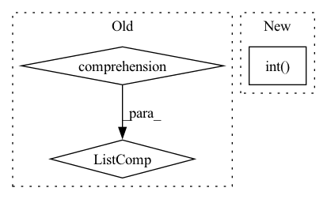

Pattern ID :11916
Before Change
output_trt = slice_layer.get_output(0)
// Step 3.5 - Add gather layer if necessary
gather_index = [e for e, s in enumerate(slices) if isinstance(s, torch.Tensor) and (s.dtype==torch.int32 or s.dtype==torch.long)]
for gidx in gather_index:
index_tensor = slices[gidx]
index_tensor_trt = trt_(ctx.network, index_tensor)
output_trt = ctx.network.add_gather(output_trt, index_tensor_trt, gidx).get_output(0)After Change
if not hasattr(index_tensor, "_trt"):
index_tensor = index_tensor.int()
else:
index_tensor = input.new_tensor(gather_value).int()
index_tensor_trt = trt_(ctx.network, index_tensor)
output_trt = ctx.network.add_gather(output_trt, index_tensor_trt, gidx).get_output(0)
// Step 4 - Add shuffle layer to insert dimensions for "None" slices and remove dimensions for "int" slicesIn pattern: SUPERPATTERN
Frequency: 3
Non-data size: 3
Instances Fragment ID: 40117024
Project Name: grimoire/torch2trt_dynamic
Commit Name: aa3a7dcd4cac8b43d220a57e5d9a3d52064f9049
Time: 2020-07-24
Author: streetyao@live.com
File Name: torch2trt/converters/getitem.py
M Class Name: AnonimousClass
N Class Name: AnonimousClass
M Method Name: convert_tensor_getitem(1)
N Method Name: convert_tensor_getitem(1)
M Parent Class:
N Parent Class:
M File Name: torch2trt/converters/getitem.py
N File Name: torch2trt/converters/getitem.py
M Start Line: 29
M End Line: 149
N Start Line: 29
N End Line: 166
Before Change
"""
beta = 2*self.bas_exp
nfact = torch.tensor([np.math.factorial(n) for n in self.bas_n],dtype=torch.float)
twonfact = torch.tensor([np.math.factorial(2*n) for n in self.bas_n] ,dtype=torch.float)
return torch.sqrt(2 * nfact / twonfact * ( 4*beta )**self.bas_n * torch.sqrt(beta/np.pi))
def _norm_gaussian_cart(self):After Change
A = self.bas_exp**exp1
B = 2**(2.*bas_n+3./2)
C = torch.tensor(f2(2*bas_n.int() -1)*np.pi**0.5).float()
return torch.sqrt(B/C)*A
Fragment ID: 40117025
Project Name: nlesc-jcer/qmctorch
Commit Name: a885e8302df57b83cefdd6158a611be050ab5e48
Time: 2019-10-28
Author: nicolas.gm.renaud@gmail.com
File Name: deepqmc/wavefunction/atomic_orbitals.py
M Class Name: AtomicOrbitals
N Class Name: AtomicOrbitals
M Method Name: _norm_gaussian(1)
N Method Name: _norm_gaussian(1)
M Parent Class: nn.Module
N Parent Class: nn.Module
M File Name: deepqmc/wavefunction/atomic_orbitals.py
N File Name: deepqmc/wavefunction/atomic_orbitals.py
M Start Line: 86
M End Line: 89
N Start Line: 114
N End Line: 121
Before Change
pred = self.model(X)
[fn(pred, y) for fn in self.metric_fns]
result = {type(fn).__name__: fn.compute().item() for fn in self.metric_fns}
[fn.reset() for fn in self.metric_fns]
return result
After Change
pred = self.model(X)
for fn in self.metric_fns:
if get_package_name(fn) == "torchmetrics":
fn(pred, y.int() )
elif get_package_name(fn) == "sklearn":
if type(fn).__name__ not in sklearn_intermediates:
sklearn_intermediates[fn.__name__] = 0 Fragment ID: 40117026
Project Name: ryantd/veloce
Commit Name: aca7bbb15fbcbae885dd418e7ff969ad4828703e
Time: 2022-01-04
Author: xiaoyu.zhai@hotmail.com
File Name: phetware/epochvisor.py
M Class Name: Epochvisor
N Class Name: Epochvisor
M Method Name: test_epoch(2)
N Method Name: test_epoch(2)
M Parent Class: object
N Parent Class: object
M File Name: phetware/epochvisor.py
N File Name: phetware/epochvisor.py
M Start Line: 126
M End Line: 133
N Start Line: 128
N End Line: 154